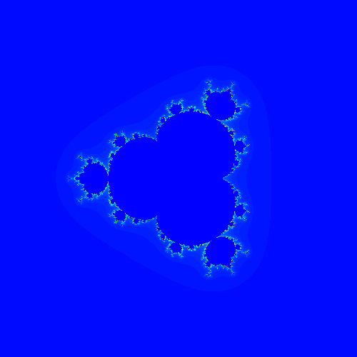
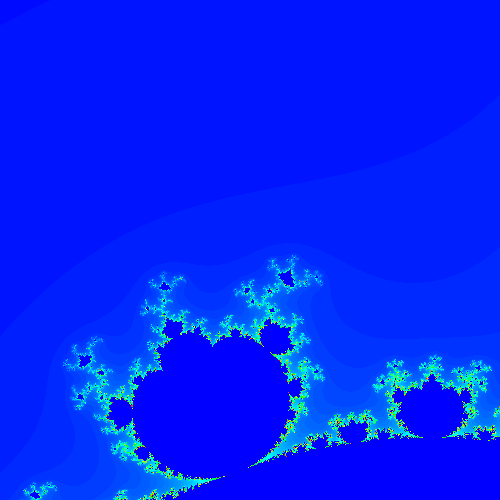

Day 18: How to use PDL to draw a Mandelbrot Set
How to use PDL to draw a Mandelbrot Set
Introduction
The Mandelbrot set is a popular fractal plot that makes for great visualizations and animations, besides its scientific uses.
I will not delve into it deeply, but the link above points to a computer algorithm that is written in Python on Wikipedia. However, if you want to make that algorithm actually intuitive and more identical to the mathematical equations, you want to use PDL for it.
PDL allows for n-dimensional arrays to be created out of the box and manipulated on, as you would do in more mathematical but slower tools like MATLAB or Mathematica.
In this post, I demonstrate how to go about implementing a Mandelbrot visualization, including multibrot ones.
Pre-requisites
Let's first install all the prerequisites using App::cpanminus, which is what
I use on Linux. This code has been tested on Ubuntu 22.04 LTS and Debian 11. If
you find an issue on other types of Linux or on Windows, please inform me.
You will also need OpenGL and freeglut development libraries installed for
your system. The graphics library we use will be PDL::Graphics::TriD for
plotting 2-D and 3-D charts using OpenGL.
## OpenGL and dependencies
$ sudo apt -y install libopengl-dev libopengl-perl freeglut3-dev libglut3-dev
## you need Perl installed
$ sudo apt -y install perl perl-modules cpanminus liblocal-lib-perl
## set your local Perl install to $HOME/perl5
$ mkdir -p ~/perl5/lib/perl5
### add this oneliner to the ~/.bashrc or ~/.profile for your terminal
$ eval $(perl -I ~/perl5/lib/perl5 -Mlocal::lib)
$ cpanm OpenGL::GLUT PDL PDL::Graphics::TriD PDL::Graphics::ColorSpace
## check if PDL got installed
$ which perldl
Learning the Implementation
The Mandelbrot set, very simplistically, is a multiple iteration of the z^2 + c
-> z equation, where in each iteration we check if the value of an element of
the z vector in the complex space, is greater than a certain bound, and
replace that with that bound value.
If you look at the pseudo-code here it can be reasonably easy to implement, in a standard nested for-loop program as shown in that link.
However, in PDL it is even simpler and more intuitive.
Step 1: First we create a 2-D (x,y) PDL vector in a linear space between
values -2 and 2. Let's take the vector to be of size 100. We need the initial
vector z to be in the complex plane where z = x + yi. We can do that in PDL
using the czip function which takes two PDL vectors, one representing the
real part of the complex number and the other representing the imaginary
part of the complex number, and then creating a native PDL object with the
complex data type. This allows PDL to operate on complex data type functions
automatically, without the user having to do those themselves by implementing
the details.
For example, the square of z would just be z**2 rather than doing a (x +
iy)**2 implementation in PDL.
my $xy = zeroes(100, 100);
my $real_xy = $xy->xlinvals($xy, -2, 2);
my $imaginary_xy = $xy->ylinvals($xy, -2, 2);
my $z = czip($real_xy, $imaginary_xy);
Step 2: Now that we have z ready we can iterate and start filling up
values for the Mandelbrot set. For this instance we use 50 iterations.
my $xy = zeroes(100, 100);
my $real_xy = $xy->xlinvals($xy, -2, 2);
my $imaginary_xy = $xy->ylinvals($xy, -2, 2);
my $z = czip($real_xy, $imaginary_xy);
## make a copy of the initial value of z
my $c = $z->copy;
foreach (1 .. 50) {
## update $z in each iteration
$z = $z**2 + $c;
}
Step 3: Now within each iteration check for the escape condition as
mentioned in the Wikipedia article. In our case we check for a bound value,
which we use as 2, but can be anything like say 5. Below we use the clip()
function which can only be used on real data types, so we do it on both the real
and imaginary part of the $z PDL and then recreate the final $z again using
czip.
my $xy = zeroes(100, 100);
my $real_xy = $xy->xlinvals($xy, -2, 2);
my $imaginary_xy = $xy->ylinvals($xy, -2, 2);
my $z = czip($real_xy, $imaginary_xy);
## make a copy of the initial value of z
my $c = $z->copy;
foreach (1 .. 50) {
## update $z in each iteration
$z = $z**2 + $c;
## check for escape value
my ($r, $i) = map $z->$_->clip(-5, 5), qw(re im);
$z = czip($r, $i);
}
Step 4: Now we have to color the pixels, and we do that by adding the square
of the two points, $r and $i, using the abs2 operation. We store this in the $escaped variable.
my $xy = zeroes(100, 100);
my $real_xy = $xy->xlinvals($xy, -2, 2);
my $imaginary_xy = $xy->ylinvals($xy, -2, 2);
my $z = czip($real_xy, $imaginary_xy);
## make a copy of the initial value of z
my $c = $z->copy;
my $escaped;
foreach (1 .. 50) {
## update $z in each iteration
$z = $z**2 + $c;
## check for escape value
my ($r, $i) = map $z->$_->clip(-5, 5), qw(re im);
$z = czip($r, $i);
$escaped = $z->abs2 > 5;
}
Step 5: Lastly we plot the 2-D array using imagrgb from
PDL::Graphics::TriD which takes the $escaped PDL as an input. This produces a
black-and-white image. The user will need to press q on the display window to
close it.
my $xy = zeroes(100, 100);
my $real_xy = $xy->xlinvals($xy, -2, 2);
my $imaginary_xy = $xy->ylinvals($xy, -2, 2);
my $z = czip($real_xy, $imaginary_xy);
## make a copy of the initial value of z
my $c = $z->copy;
my $escaped;
foreach (1 .. 50) {
## update $z in each iteration
$z = $z**2 + $c;
## check for escape value
my ($r, $i) = map $z->$_->clip(-5, 5), qw(re im);
$z = czip($r, $i);
$escaped = $z->abs2 > 5;
}
imagrgb[$escaped];
Step 6: If you want to see an animation of each iteration you can disable
the q pressing using the nokeeptwiddling3d() function and invoke the
imagrgb call in each iteration instead.
my $xy = zeroes(100, 100);
my $real_xy = $xy->xlinvals($xy, -2, 2);
my $imaginary_xy = $xy->ylinvals($xy, -2, 2);
my $z = czip($real_xy, $imaginary_xy);
nokeeptwiddling3d();
my $c = $z->copy;
foreach (1 .. 50) {
$z = $z ** $power + $c;
my ($r, $i) = map $z->$_->clip(-5, 5), qw(re im);
$z = czip($r, $i);
$escaped = $z->abs2 > 5;
imagrgb[$escaped];
}
keeptwiddling3d();
twiddle3d();
Step 7: We can then save the final image using the wpic function and call
it on the $escaped PDL like below.
$escaped->wpic("final.png");
Step 8: Let's count how many iterations before it escapes its bounds:
my $xy = zeroes(100, 100);
# ...
my $iterations = $xy->copy;
foreach (1 .. 50) {
# ...
$escaped = $z->abs2 > 5;
$iterations->where($escaped & !$iterations) .= $_;
imagrgb[$iterations / $_];
}
The Full Implementation
Here's the full script for the basic implementation. The constants for the bound value, maximum iterations, size of the vectors have been replaced with variables.
Let's say the following script is titled mandelbrot.pl.
You can run it on the commandline line perl ./mandelbrot.pl 500 100 5 2 to get a single Mandelbrot set.
To get a multibrot set you can run it as perl ./mandelbrot.pl 500 100 5 4 and see the visuals attached.
use strict;
use warnings;
use Scalar::Util qw(looks_like_number);
use PDL;
use PDL::Graphics::TriD;
use PDL::Graphics::ColorSpace;
sub as_heatmap {
my ($d) = @_;
my $max = $d->max;
die "as_heatmap: can't work if max == 0" if $max == 0;
$d = $d / $max; # negative OK
my $hue = (1 - $d)*240;
$d = cat($hue, pdl(1), pdl(1));
hsv_to_rgb($d->mv(-1,0));
}
## escape time algorithm
my $maxsz = looks_like_number($ARGV[0] // '') ? int($ARGV[0]) : 100;
my $max_iter = looks_like_number($ARGV[1] // '') ? int($ARGV[1]) : 50;
my $bound = looks_like_number($ARGV[2] // '') ? $ARGV[2] : 5;
my $power = looks_like_number($ARGV[3] // '') ? int($ARGV[3]) : 2;
my $xy = zeroes($maxsz, $maxsz);
my $real_xy = xlinvals($xy, -2, 2);
my $imaginary_xy = ylinvals($xy, -2, 2);
my $escaped;
nokeeptwiddling3d();
my $z = czip($real_xy, $imaginary_xy);
my $c = $z->copy;
my $iterations = $xy->copy;
foreach (1 .. $max_iter) {
$z = $z ** $power + $c;
my ($r, $i) = map $z->$_->clip(-$bound, $bound), qw(re im);
$z = czip($r, $i);
$escaped = $z->abs2 > $bound;
$iterations->where($escaped & !$iterations) .= $_;
imagrgb[as_heatmap($iterations)->using(0..2)];
}
print "Press q in the window to exit\n";
keeptwiddling3d();
twiddle3d();
as_heatmap($iterations)->wpic(sprintf "final_%d_%d_%d_%d.png", $maxsz, $max_iter, $bound, $power);
Final Visualization

And with power 4, zoomed in on x=[-0.2,0.2] y=[0.7,1.1]:


Vikas N Kumar
Vikas N Kumar (aka "vicash" on IRC) has been using Perl for about 18 years. He builds a lot of web-based software in Perl, and works in the finance industry doing a mix of C, C++ and Perl in his day job trying to succeed building trading strategies and trading systems. He has a background in Aerospace engineering but spends most of his time doing Computer Science related projects.